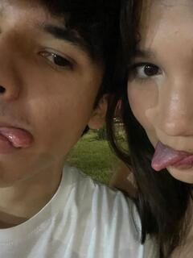
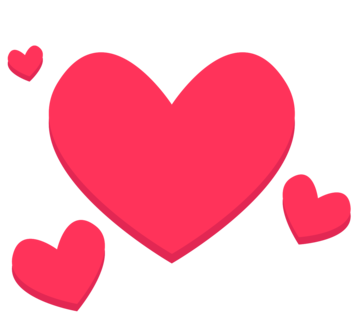

Holaa ale, espero que no me de verguenza enseñarte esto por que siento que va a quedar bien chaafon pero la verdad queria hacerte algo asi diferente a una carta y pue como llevo una semana en ing. de software ya me la tiro de programador, empecemos de nuevo.
Holaaa mi amor cumplimos 11 meses de novioooos, que rapido se paso el tiempo verdad, estoy seguro de que es porque disfrute todo este tiempo de una manera que no te imaginas, no te imaginas lo bonito que siento al saber que estoy cumpliendo 11 meses de novio con el amor de mi vida, la mujer de mis sueños, mi futura esposa y madre de mis hijos;b viste saco la lengua en programador, mi amor de verdad estoy emocionadisimo como no te imaginas porque aparte de que cumpliremos 11 meses mañana te voy a veeeeeer despues de un mes entero y la verdad que este mes sin verte la pase muy mal no te voy a mentir y me pone muy muy feliz saber que te voy a ver, finalmente chikos, finalmete se nos hizo y espero que ya nos empecemos a ver mas seguido mi amor porque realmente no creo poder aguantar tanto tiempo sin verte :c te extraño tanto como no te imaginas :c no te rias de mis caritas eh pq no tengo emojis o todavia no se como ponerlos, y sabes que tambien me pone muy nervioso, que voy a conocer a tu abuelita porfin tengo muchas ganas de conocerla a ella y a toda tu familia que me hace falta conocer que es un chorro. Ya nos falta un solo mes para tener un año de novios mi vida no manches aqui ocupo unos emojis de nervios, osea 11 meses esta bien pue perooooo ya un año es un año no cualquiera.
yo con mi noviecita pechocha que amo tanto

